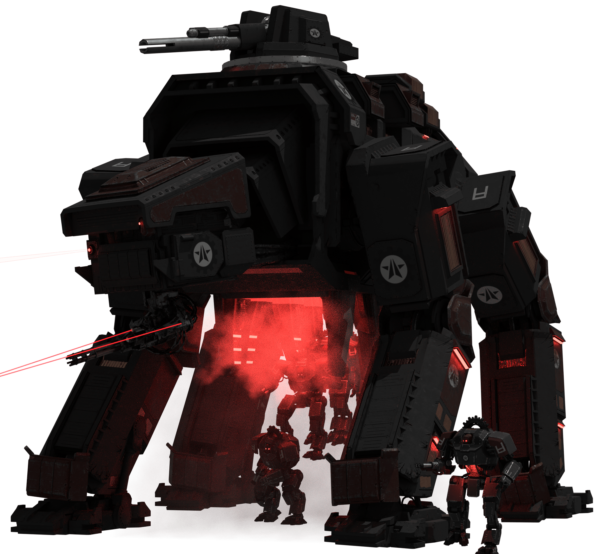

-- THE AUTOMATON WAR --

Factory Strider
Massive Automaton quad-walker, armed with twin fusion gatling guns and a large burst-cannon. Capable of creating and deploying squads of Devastators.
BACK TO THE GALACTIC WAR CAMPAIGN